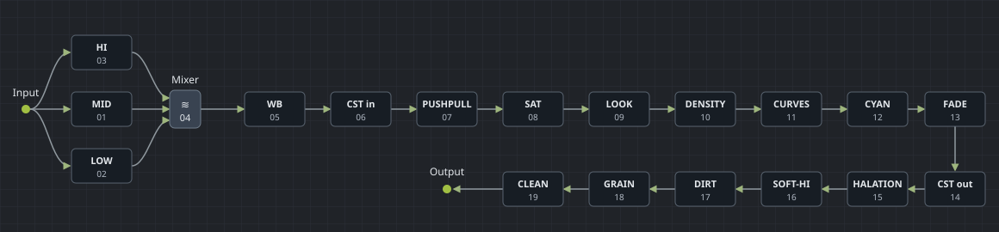

Color Grade
StorylensResolve · editable native nodes · duplicate timeline
Build the original editable node structure and set a starting balance, contrast and saturation.

Presets & LUTs
Original test swatches
With selected LUT
Park the playhead on a clip in Resolve. Selecting a LUT previews it in a separate color version. Choose a LUT that matches the footage's input color space.
Project setup
Open a footage-only V1 timeline in Resolve Studio with manual DaVinci YRGB. Color Grade 1 uses RealFilmV2_Rec709 from the current library's PowerGrade albums. Color Grade 2 also requires a DaVinci Wide Gamut / Intermediate timeline. Both grades open as editable nodes in Resolve. For Log or HDR footage, match the input transform and grade manually in Resolve.